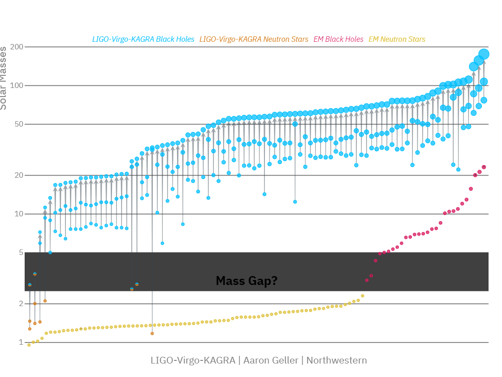

3 Gravitational Wave Detection
Gravitational waves were first theorized by Einstein, accompanying his theory of general relativity. However, it was not even clear whether this was an artifact of the theory or something real. Of course as we have seen, Gravitational Wave (GW) are predicted to be very weak, and thus there initially very little hope of ever detecting them. As evidence mounted that General Relativity (GR) was indeed a very good theory of gravity, people started to investigate more seriously whether one could detect GW . The first detectors were resonant antennas, however, these have to date, not been successful in detecting GW . The more modern laser based detectors were the final piece of the puzzle. With extremely high precision (the modern measurement accuracy at Laser Interferometer Gravitational-Wave Observatory (LIGO) is equivalent to measuring the distance to Alpha Centauri to the width of a human hair), these detectors are able to detect GW . The first detection was made in 2015, marking the beginning of a new era in astronomy, and maybe even physics itself.
3.1 Laser interferometers
Laser-interferometer based GW detectors are essentially scaled up versions of the Michelson interferometer. This device splits a beam of colimated coherent photons (laser) into two, letting them propagate along two axes in an L configuration, before being reflected back to the beam splitter. The two beams when recombined, interfere with each other, constructively or destructively, dependent on the nature of the medium they have traveled through and the length of each arm.
For a gravitiational wave to have an effect on such an apparatus, all the otpical equipment should be free to move and be isolated from external vibrations as much as possible. This is achieved by handing the mirror on precisely tuned pendulums. When the gravitational wave propagates through the apparatus, it will effectively induce a relative movement between the masses, changing the difference \(L_x-L_y\) in length of the detectors arms, by an amount \(\Delta L\). This effect will be exaserbated as the length of the arms \(L_x \sim L_y \sim L\) is increased and thus we must normalise by it to get the strain \(h\):
\[ \frac{\Delta L}{L}=\left[(1 / 2)\left(1+\cos ^2 (\theta)\right) \cos (2 \phi)\right] h_{+}+[\cos (\theta) \sin (2 \phi)] h_{\times} \equiv h \]
where \(\theta\) and \(\phi\) are the polar and azimuthal angles of the direction of propagation of the GW . The strain is decomposed into components, \(h_{+}\) and \(h_{\times}\), which are the plus and cross polarisations of the wave. The strain sensitivity can be further increased by bouncing the light back and forth multiple times along the arms of the interferometer. In current implementations this is achieved using fabry - perot cavities spanning the whole length of the arms.
3.1.1 LIGO and ground based observatories
LIGO implements the measurement apparatus described in the past section. In consists of two detectors, both in the USA, one in Livingston Louisiana and one in Hanford Washington, a separation of \(3000 \text{ km}\). Each LIGO detector has two \(4\text{ km}\) long arms made up of \(1.2\text{ m}\)-wide vacuum tubes, each operating as fabry-perot cavities. The light from an effective \(750\text{ kW}\) laser bounces back and forth inside these arms around 300 times. Thus the effective arm length becomes \(1200\text{ km}\), drastically improving sensitivity.
LIGO while it was in fact the first to provide detection data, it does not live in a vacuum. In fact for the first published detection, the data analysis teams from LIGO joined forces with those for Virgo, the european gravitational wave detector forming a collaboration. The Virgo detector is located in Cascina, Italy, and is very similar to LIGO . It has \(3\text{ km}\) long arms and a different suspention system. It joined data collection with LIGO in the second observing run in 2017. Finally there are two other detectors that are now part of the collaboration, KAGRA in Japan and GEO600 in Germany. KAGRA is a similar detector to Virgo in scale, but is built underground further isolating it from seismic activity and GEO600 is a smaller detector, with \(600 \text{ m}\) long arms, built more as a test bed for future detectors.
These ground base detectors, although already exhibiting impressive sensitivity, are still limited by the fact that they are on the ground. This means that they are subject to seismic activity, which can cause vibrations that limits the lower bound of the frequency sensitivity of the detectors. The optics and other higher frequency noise imposes an upper bound to the frequency. Thus ground based detectors are only sensitive to frequencies in the following rough range:
\[ [10^{0},10^{4} ]\text{ Hz}. \]
This means that they are sensitive to the comparable, stellar mass 1 compact binaries, what we think to be the most common type of binary in the universe. Of course this is not an accident, as these detectors were purpose built for providing evidence of GW in general. In fact they have been quite successful in this regard, with the now upwards of 90 detections of GW to date.
1 and a bit bigger \(\sim 1 - 10^3 M_\odot\)

In Figure 3.1, the current library of compact binary systems detected by LIGO -Virg-Kagra is shown along with those detected through non GW means. The highlighted band denotes the assumed mass gap that should exist between the neutron star and black hole mass distributions. Note that most of the detections are compatible with the presence of such a gap. However ,there are a few that are not, and these are the ones that are most interesting. These are binaries with masses too light to be black holes, but too heavy to be neutron stars, and a lot of research is ongoing to try and understand what these objects are, and if they are not just measurement artefacts.
3.1.2 Laser Interferometer Space Antenna (LISA)
TODO
3.2 Matched filtering
The signals measured by the laser interferometers such as LIGO , are a measurement of strain over time. This waveform essentially measures the deformation of spacetime when a GW passes through a detector. While some GW signals coming out of laser interferometers, are clearly identified as such, mainly due to their extraordinary power output, smaller systems and weaker signals are harder to identify. In fact most of the detections have happened under the noise floor of the detectors. How is this possible? Matched filtering and waveform generation. In this section we will explain the matched filtering approach.
Consider some detector output signal \(s\) consisting of noise \(n\) and a possible true GW signal \(h_i\) (or signals, making up a family \(\{h_i \}\)). The nature of the noise is unpredictable and necessarily probabilistic in nature. We can however, model the noise as a random variable \(n\) with some probability distribution \(P_n\), dependent on variables that we consider and have measured to be significantly impactful.
In such a probabilistic setup one could try to find the probability that the signal \(h_i\in \{h_i \}\) has been detected, conditional on the actual data \(s\). This however is impractical as it requires a priori knowledge on the family of possible signals, information totally inaccessible to us. Instead, we can devise a functional \(\mathcal{F}[s,h_i ]\), (statistic) dependent on both the data and the supposedly present GW signal. We can then choose a threshold \(\rho^*\) above which we claim detection of the signal \(h_i\), i.e. if \(\mathcal{F}[s,h_i ]>\rho^*\).
The functional that is used is based on the symmetric inner product \(\langle s,h_i \rangle\), that correlates the data \(s\) with the template \(h_i\), weighting by detector frequency sensitivity:
\[\langle g,h \rangle=2\int\limits_{-\infty}^{\infty}\frac{{\mathtip{\hat{g}}{\text{Fourier transform of $g$ in variable $x$: }{\hat{g}\left(2\pi f\right) = \int \,\mathrm{d}^{}x\, g(x) \texttip{\mathrm{e}^{\mathtip{\mathring{\imath}}{\text{Complex unit: } \mathring{\imath}^2 = -1}2\pi f \cdot x}}{exponential function}}}{}^\ast}(f)\mathtip{\hat{h}}{\text{Fourier transform of $h$ in variable $x$: }{\hat{h}\left(2\pi f\right) = \int \,\mathrm{d}^{}x\, h(x) \texttip{\mathrm{e}^{\mathtip{\mathring{\imath}}{\text{Complex unit: } \mathring{\imath}^2 = -1}2\pi f \cdot x}}{exponential function}}}(f)}{S_n(\vert f \vert)}\,\mathrm{d}^{}f\,=4 \Re{\int\limits_{0}^{\infty}}\frac{{\mathtip{\hat{g}}{\text{Fourier transform of $g$ in variable $x$: }{\hat{g}\left(2\pi f\right) = \int \,\mathrm{d}^{}x\, g(x) \texttip{\mathrm{e}^{\mathtip{\mathring{\imath}}{\text{Complex unit: } \mathring{\imath}^2 = -1}2\pi f \cdot x}}{exponential function}}}{}^\ast}(f)\mathtip{\hat{h}}{\text{Fourier transform of $h$ in variable $x$: }{\hat{h}\left(2\pi\right) = \int \,\mathrm{d}^{}x\, h(x) \texttip{\mathrm{e}^{\mathtip{\mathring{\imath}}{\text{Complex unit: } \mathring{\imath}^2 = -1}2\pi \cdot x}}{exponential function}}}(f)}{S_n({f})}\,\mathrm{d}^{}f\,,\]
where \({\mathtip{\hat{g}}{\text{Fourier transform of $g$ in variable $x$: }{\hat{g}\left(2\pi\right) = \int \,\mathrm{d}^{}x\, g(x) \texttip{\mathrm{e}^{\mathtip{\mathring{\imath}}{\text{Complex unit: } \mathring{\imath}^2 = -1}2\pi \cdot x}}{exponential function}}}{}^\ast}\) is the conjugate of the frequency Fourier transform of \(g\). \(S_n(f)\) is the noise power spectral density, characterising the detector sensitivity defined by:
\[ \overline{{\mathtip{\hat{n}}{\text{Fourier transform of $n$ in variable $x$: }{\hat{n}\left(2\pi f\right) = \int \,\mathrm{d}^{}x\, n(x) \texttip{\mathrm{e}^{\mathtip{\mathring{\imath}}{\text{Complex unit: } \mathring{\imath}^2 = -1}2\pi f \cdot x}}{exponential function}}}{}^\ast}(f_1)\mathtip{\hat{n}}{\text{Fourier transform of $n$ in variable $x$: }{\hat{n}\left(2\pi f\right) = \int \,\mathrm{d}^{}x\, n(x) \texttip{\mathrm{e}^{\mathtip{\mathring{\imath}}{\text{Complex unit: } \mathring{\imath}^2 = -1}2\pi f \cdot x}}{exponential function}}}(f_2)}=\tfrac{1}{2}\texttip{\delta^{{}}(f_1-f_2)}{Dirac delta function} S_n(f_1)\texttip{\Theta^{{}}(f_1)}{Heaviside step function}, \]
where the bar denotes the average over the noise realisation, \(\texttip{\delta^{{}}(f_1-f_2)}{Dirac delta function}\) is the Dirac delta function, and \(\texttip{\Theta^{{}}(f_1)}{Heaviside step function}\) is the Heaviside step function. We can now define the signal to noise ratio for the signal when filtered by \(h_i\) as 2
2 The equality is due to the fact that we average over all realisations of noise, which averrages to uniform: \(\overline{\langle h_i,n \rangle\langle n,h_i \rangle}=\langle h_i,h_i \rangle\)
\[ \rho (h_i)=\frac{\langle s,h_i \rangle}{\operatorname{rms}\langle n,h_i \rangle}=\frac{\langle s,h_i \rangle}{\sqrt{\langle h_i,h_i \rangle}}. \]
where \(\operatorname{rms}\) denotes the root mean square. This is the functional \(\mathcal{F}[s,h_i ]\) we are after and we claim detection if \(\rho(h_i)>\rho^*\). If the noise is normally distributed it can in fact be proven to be the optimal filtering technique, in the sense that it minimises the probability of false positives. For example, if we have a fully gaussian noisy signal \(s=n\) then \(\rho\) is a normal variable centered on zero with unit variance. If there is some signal \(h_i\) present, over some still gaussian noise \(n\) then it can be proven that \(\rho\) is still normal but centered on \(\sqrt{\langle h_i,h_i \rangle}\) with unit variance.
The threshold can be set ty correspond to a desired false positive rate:3
3 The complementary error function is given by \(\operatorname{erfc}( z)=\frac{2}{\sqrt{\pi}} \int_z^{\infty} \texttip{\mathrm{e}^{-t^2}}{exponential function} \,\mathrm{d}^{}t\,=1-\operatorname{erf}( z).\)
\[\mathcal{F}=\sqrt{\frac{1}{2\pi}}\int\limits_{\rho^*}^{\infty} \texttip{\mathrm{e}^{-\frac{1}{2}{\rho^2}}}{exponential function}\,\mathrm{d}^{}\rho\,=\tfrac{1}{2}\operatorname{erfc}(\frac{\rho^*}{\sqrt{2}}),\]
or correct detection rate:
\[ \mathcal{D}=\frac{1}{2}\operatorname{erfc}\Big[\frac{\rho^*- \sqrt{\langle h_i,h_i \rangle}}{\sqrt{2}} \Big]. \]
Now given a signal and a template we have a procedure to determine if the signal is present or not. The physics output of a detection is therefor upper bounded by the physics content of the template. The matched filtering approach is contingent on having a waveform that corresponds to the physical process that is emitting the signal. Usually these processes can be parametrized by a set of parameters, such as in the case of a compact binary, the mass ratio of the binary, the orbit eccentricity, the possible spin etc. The filter waveform must then of course depend on these parameters, be it heuristically or physically (i.e., from first principles).
3.3 Pulsar Timing Array (PTA)
A PTA consists of an array of several pulsars whose pulse periods (or Time of Arrival (ToA) ) are monitored with very high precision by one or more radio telescopes. Pulsars, from pulsating radio source, are though to be highly magnetized rotating neutron stars. These neutron stars emit string electromagnetic radiation from their magnetic poles, which when not aligned with rotational poles, emit in the manner of a lighthouse. The measured pulses are extremely regular in nature, with periods ranging from a few milliseconds to a few seconds. Over a year the variation in the pulse period is on the order of a few microseconds [1]. We can therefor use these as clocks, and measure their variation from their normal cycle time.
If a gravitational wave is between the pulsar and the observer, then the radio wave emitted by the pulsar will be effectively by travelling in a medium with anisotropic refractive index. This will cause the pulse to be delayed, or sped up, depending on the relative direction of the wave, it’s polarization axes and the direction of the pulsar. If one has a collection of such pulsars with precisely known periods, evenly distributed in the celestial sphere, then one can use the relative delay of the pulses to measure the direction and nature of the wave. nthe setup is essentially a blown up version of LIGO with light-year scale arms instead of kilometer scale arms.
Currently the set of pulsars suitable for this type of measurement is around 40 [2]. Many more pulsars have been measured but not all are suitably regular to be used in PTA . The frequency range of sensititivity of PTA has a lowe bound set by observation duration and higher bound set by cadence of measurement. Currently the IPTA [3] has been measuring for 13 years, with measurements being taken every week yielding a sensitivity in a drastically different band than that of LIGO and LISA :
\[ [10^{-9},10^{-7} ]\text{Hz}. \]
The nature of sources that can be detected by PTA is therefor different from that of LIGO and LISA . The PTA sensitivity is more suited to detect stochastic gravitational waves, such as those emitted by the early universe, or by the supermassive black holes (\(10^6-10^9M_\odot\)) in the centers of galaxies4.
4 more massive objects have longer orbital periods